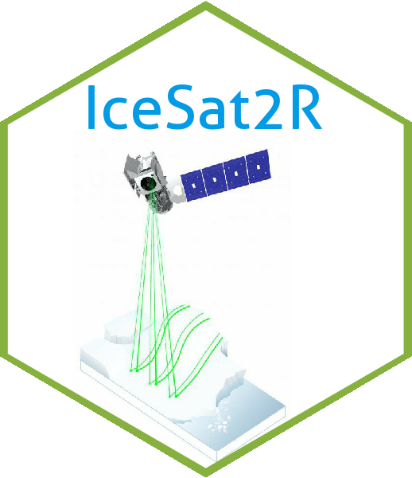
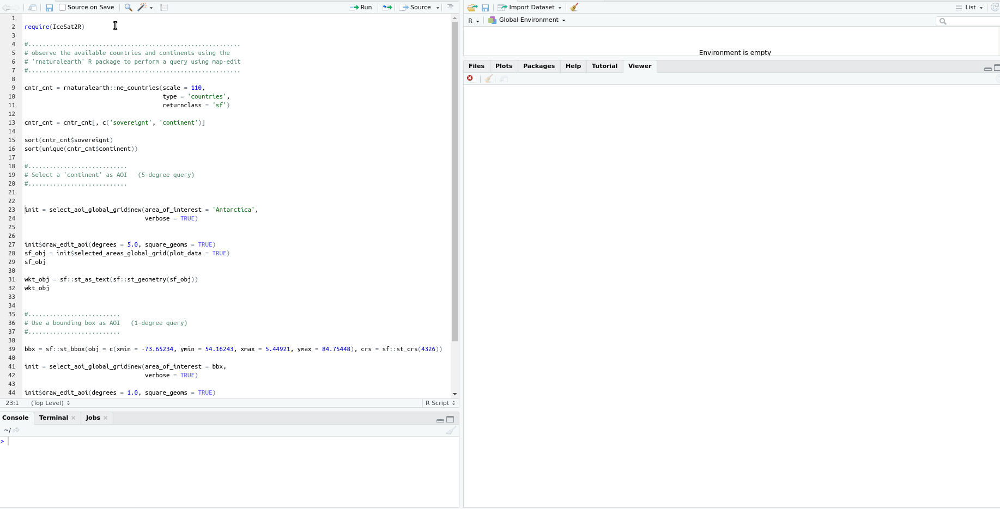
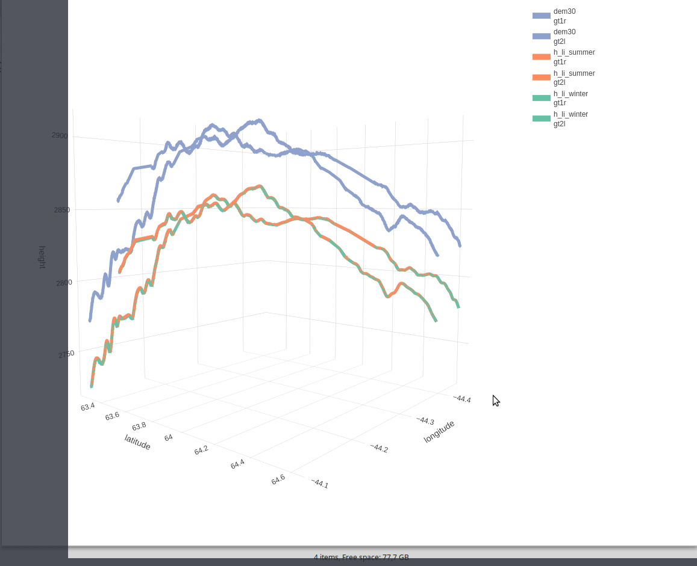
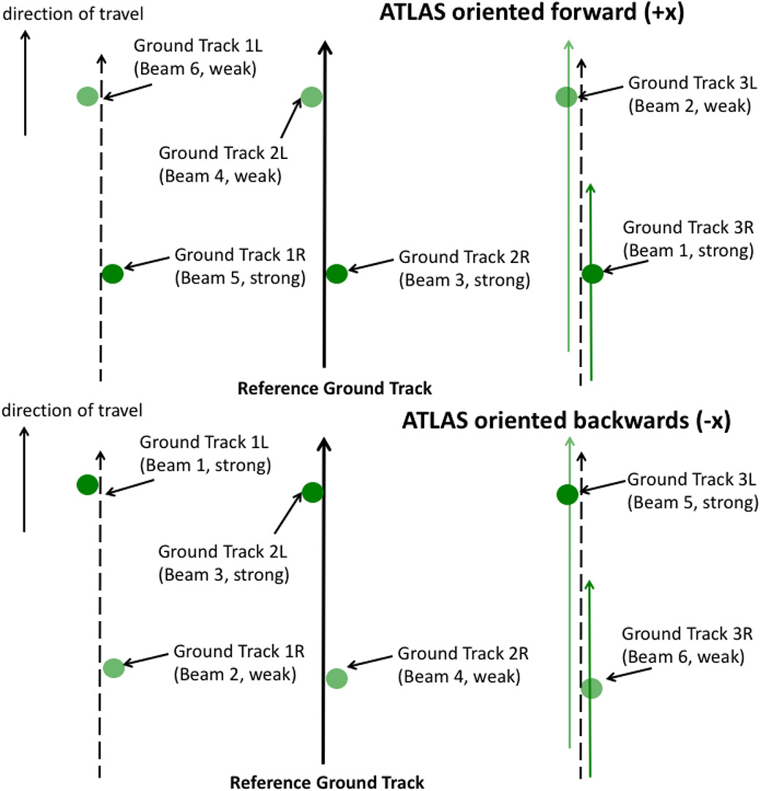

IceSat2R
Programmatic connection to the OpenAltimetry API to download and process the following ICESat-2 Altimeter Data,
- ‘ATL03’ (Global Geolocated Photon Data)
- ‘ATL06’ (Land Ice Height)
- ‘ATL07’ (Sea Ice Height)
- ‘ATL08’ (Land and Vegetation Height)
- ‘ATL10’ (Sea Ice Freeboard)
- ‘ATL12’ (Ocean Surface Height)
- ‘ATL13’ (Inland Water Surface Height)
The user has the option to download the data by selecting a bounding box from a 1- or 5-degree grid globally utilizing a shiny application. The Documentation, the two package Vignettes (first, second) and the blog post explain the functionality in detail.
The ICESat-2 mission collects altimetry data of the Earth’s surface. The sole instrument on ICESat-2 is the Advanced Topographic Laser Altimeter System (ATLAS) instrument that measures ice sheet elevation change and sea ice thickness, while also generating an estimate of global vegetation biomass.
ICESat-2 continues the important observations of
- ice-sheet elevation change
- sea-ice freeboard, and
- vegetation canopy height
begun by ICESat in 2003.
System Requirements
The usage of the IceSat2R package requires a geospatial setup as specified in the sf or terra README.md files.
Shiny application to select an area of interest (AOI) from a 1- or 5-degree global grid
The OpenAltimetry API restricts the requests to a 1x1 or 5x5 degree spatial bounding box, unless the “sampling” parameter is set to TRUE. The shiny application of the IceSat2R package allows the user to create a spatial grid of an AOI, preferably a 1- or 5-degree grid so that the selection can be within limits. An alternative would be to create a grid of smaller grid cells than required (for instance a 4-degree grid) and then to select multiple grid cells,

Example Use Case-1: 3-Dimensional Line Plot by combining ICESat-2 and Copernicus DEM (Digital Elevation Model) Data
The following 3-dimensional interactive line plot (which appears in the ‘IceSat-2_Atlas_products’ Vignette) shows,
- in blue color the elevation based on the DEM compared to the two ICESat-2 beams (‘gt1r’ and ‘gt2l’), as these are separated by a 3-km distance
- in orange color the land-ice-height measurements of the summer period (separately for ‘gt1r’ and ‘gt2l’)
- in green color the land-ice-height measurements of the winter period (separately for ‘gt1r’ and ‘gt2l’)

Example Use Case-2: Multi-Plot displaying the Ice, Land, Canopy and Copernicus DEM (30-meter) of each beam separately for a specific ICESat-2 Track and area of interest (Himalayas mountain range)

Binder
The user of the IceSat2R R package can reproduce the examples of the documentation using the available binder Rstudio image. Once launched the cloud instance will take a few minutes to be ready. You can read more about binder on the web. In short, binder allows to make “your code immediately reproducible by anyone, anywhere”. Limitations:
- up to maximum 100 concurrent users
- 1 CPU
- 1 to 2 GB of memory
- up to six hours of session time per user session, or up to one cpu-hour for more computationally intensive sessions
Docker Image
Docker images of the IceSat2R package are available to download from my dockerhub account. The images come with Rstudio and the R-development version (latest) installed. The whole process was tested on Ubuntu 18.04. To pull & run the image do the following,
docker pull mlampros/icesat2r:rstudiodev
docker run -d --name rstudio_dev -e USER=rstudio -e PASSWORD=give_here_your_password --rm -p 8787:8787 mlampros/icesat2r:rstudiodevThe user can also bind a home directory / folder to the image to use its files by specifying the -v command,
docker run -d --name rstudio_dev -e USER=rstudio -e PASSWORD=give_here_your_password --rm -p 8787:8787 -v /home/YOUR_DIR:/home/rstudio/YOUR_DIR mlampros/icesat2r:rstudiodev
The USER defaults to rstudio but you have to give your PASSWORD of preference (see www.rocker-project.org for more information).
Open your web-browser and depending where the docker image was build / run give,
1st. Option on your personal computer,
2nd. Option on a cloud instance,
to access the Rstudio console in order to give your username and password.
Installation:
To install the package from CRAN use,
install.packages("IceSat2R")and to download the latest version of the package from Github,
remotes::install_github('mlampros/IceSat2R')R package tests:
To execute the package tests (all or a specific file) use the following code snippet:
# first download the latest version of the package
url_pkg = 'https://github.com/mlampros/IceSat2R/archive/refs/heads/master.zip'
temp_pkg_file = tempfile(fileext = '.zip')
print(temp_pkg_file)
download.file(url = url_pkg, destfile = temp_pkg_file, method = 'wget', quiet = TRUE)
utils::unzip(zipfile = temp_pkg_file, exdir = dirname(temp_pkg_file), junkpaths = FALSE)
# run all tests
testthat::test_local(path = file.path(dirname(temp_pkg_file), 'IceSat2R-master'),
reporter = testthat::default_reporter())
# run a specific test file from the 'testthat' directory of the package
# https://github.com/mlampros/IceSat2R/tree/master/tests/testthat
test_specific_file = file.path(dirname(temp_pkg_file),
'IceSat2R-master',
'tests',
'testthat',
'test-mission_orbits.R')
Sys.setenv(NOT_CRAN = "true") # run all tests (including the ones skipped on CRAN)
testthat::test_file(path = test_specific_file, reporter = testthat::default_reporter())
Sys.unsetenv("NOT_CRAN") # unset the previously modified environment variableThe previous code snippet allows a user to test if the package works as expected in any Operating System.
The Beam Pattern
The ATLAS beam pattern on the ground changes depending on the orientation of the ICESat-2 observatory. The pattern on top (of the following Figure) corresponds to traveling in the forward (+x) orientation, while the pattern on the bottom corresponds to traveling in the backward (-x) orientation. The numbers indicate the corresponding ATLAS beam, while the L/R mapping are used on the ATL03 and higher-level data products. The two strong beams with the TEP are ATLAS beams 1 and 3 (Fig.8, Neumann et al., 2019, https://doi.org/10.1016/j.rse.2019.111325)

Using a table to map the strong and weak beams (Reference: sliderule-python documentation)
ATLAS oriented forward (+x)
| ATLAS Spot Number | Ground track Designation | Beam Strength |
|---|---|---|
| 1 | gt3r | Strong |
| 2 | gt3l | Weak |
| 3 | gt2r | Strong |
| 4 | gt2l | Weak |
| 5 | gt1r | Strong |
| 6 | gt1l | Weak |
ATLAS oriented backwards (-x)
| ATLAS Spot Number | Ground track Designation | Beam Strength |
|---|---|---|
| 1 | gt3r | Weak |
| 2 | gt3l | Strong |
| 3 | gt2r | Weak |
| 4 | gt2l | Strong |
| 5 | gt1r | Weak |
| 6 | gt1l | Strong |
Citation:
If you use the code of this repository in your paper or research please cite both IceSat2R and the original articles (see CITATION) https://CRAN.R-project.org/package=IceSat2R:
@Manual{,
title = {{IceSat2R}: ICESat-2 Altimeter Data using R},
author = {Lampros Mouselimis},
year = {2022},
note = {R package version 1.0.2},
url = {https://CRAN.R-project.org/package=IceSat2R},
}Code of Conduct
Please note that the IceSat2R project is released with a Contributor Code of Conduct. By contributing to this project, you agree to abide by its terms.